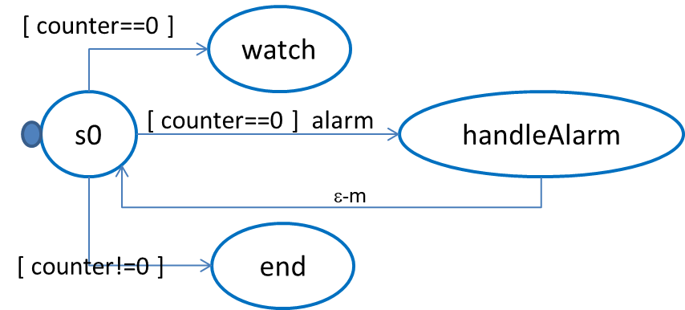

demonottodo
demonottodo.qak.
A model 'non-model'.
We must always remember that a qak file should include the (textual) definition of a model,
in order to define structure, interaction and behavior of (logical) architectures of distributed systems.
|
Since the QAk language aims at capturing the interaction between (distributed) actors, it is not
'computationally completed' and part of the behavior could be sometimes directly expressed in Kotlin.
But without overstating such a possibility.
|
demostrange
demostrange.qak.
This example allows us to better understand the behavior of empty-moves
and the
Message handling rules
|

|
demo0
demo0.qak.
This is the example introduced in
LabQakExamples2020.html.
If we send the sequence: msg1, msg1, msg2 and
run with discardMsg On or with discardMsg Off, we have different results:
//discardMsg On
demo in s1
demo in s2 since msg1:msg1(1)
demo in s3 since msg2:msg2(1)
demo in s1
|
//discardMsg Off
demo in s1
demo in s2 since msg1:msg1(1)
demo in s3 since msg2:msg2(1)
demo in s1
demo in s2 since msg1:msg1(2) |
|

|
sentinel
sentinel.qak
This is the example introduced in
LabQakExamples2020.html
and shows guards in transition.

//Output
sentinel | STARTS
watcher emits fire
sentinel | WATCH
sentinel in handleAlarm | msg(...alarm(fire),8)
sentinel | ALARM fire
sentinel | STARTS
sentinel | WATCH
sentinel in timeout | msg(local_tout_...)
sentinel | TIMEOUT
sentinel | STARTS
sentinel | ENDS
watcher emits tsunami
|
//output when no whenTime in (1)
sentinel | STARTS
watcher emits fire
sentinel | WATCH
sentinel in handleAlarm | msg(...alarm(fire),8)
sentinel | ALARM fire
sentinel | STARTS
sentinel | WATCH
watcher emits tsunami
sentinel in handleAlarm | msg(... alarm(tsunami),9)
sentinel | ALARM tsunami
sentinel | STARTS
sentinel | WATCH
|
To understand why the sentinel perceives the second alarm, see
Message handling rules
Note that, if we insert delay 1500 in state handleAlarm, eliminate Goto s0 in (2)
and insert the commented Transition t0 whenTime 10 -> explore,
the second alarm is lost.
|
Events emitted by 'aliens'
Comment whenTime in (1) and insert Goto watch in (3).
Examples of 'Aliens' written in Ptyhon3 that emit events are:
- tcp_emitter.py (that makes use of the TCP on the context port)
- mqtt_emitter.py (that makes use of the MQTT broker
specified by the sentinel).
Remember to activate the 'sentinel' by specifying a MQTT Broker.
|
Request simple
demo_req_a.qak

|
An example of using request/reply
|
Request with askfor
demo_req_b.qak

|
An example of using request/reply with askFor.
|
Using Prolog
prologusage.qak
An example of using Prolog and an user-defined declarative knowledge-base:
userKb.pl
|
The QAk infrastructure makes use of a set of system rules expressed in Prolog:
sysRules.pl |
Actors as CoAP resources
coapdemo.qak
coapdemocaller.qak
A CoAP observer written in Kotlin is defined in:
resources/coap/actorQakCoapObserver.kt
|
An example of another caller wriiten in Kotlin:
resources/coap/actorQakCoapClient.kt
The possibility to write a CoAP caller in Python is still under investigation
|
Actors as streams
 streamsdemo.qak
streamsdemo.qak
Actors that work in message-driven way
- sonarSimulator.kt: once activated, exploits a
Suspendable Sequence
to generate a sequence of (sonar) data in the form of qak events: Event sonarRobot : sonar(DISTANCE)
- dataLogger.kt: when it receives a message from the previous component in the pipe,
shows the message and aftwerwards propagates the message (as it is) to the next component of the pipe.
- dataCleaner.kt: when it receives a message (event sonarRobot) from the previous component in the pipe,
propagates to the next component only the events whose DISTANCE is within a prefixed interval of values;
- distanceFilter.kt;
when it receives a message (event sonarRobot) from the previous component in the pipe,
propagates to the next component a new event (Event obstacle : obstacle(DISTANCE)) when the value of DISTANCE i sless than
a prefixed value;
- qasink: is the actor defined in the model streamsdemo.qak.
It crreates the pipe and handles the events emitted by distanceFilter.kt
|
Coded QAkactors
The model streamsdemo.qak defines a system composed by the qasink
and a set of actors qualified as CodedQActor.
A CodedQActor is an actor completely written in Kotlin that can be included in the system by specifying its class name.
Its presence is included in the description of the system. In fact, in our case, such a descripiton, wrtiten in
streamsdemo.pl is:
context(ctxstreamsdemo, "localhost", "TCP", "8045").
qactor( sonarsimulator, ctxstreamsdemo, "rx.sonarSimulator").
qactor( datalogger, ctxstreamsdemo, "rx.dataLogger").
qactor( datacleaner, ctxstreamsdemo, "rx.dataCleaner").
qactor( distancefilter, ctxstreamsdemo, "rx.distanceFilter").
qactor( qasink, ctxstreamsdemo, "it.unibo.qasink.Qasink").
Thus, the QA-infrastructure handles a CodedQActor as a usual; in particular, it will 'inject' into it the context
specified by the model.
Note that each CodedQActor in this example is defined as a specialized version of
ActorBasic that has no context at creation time.
|